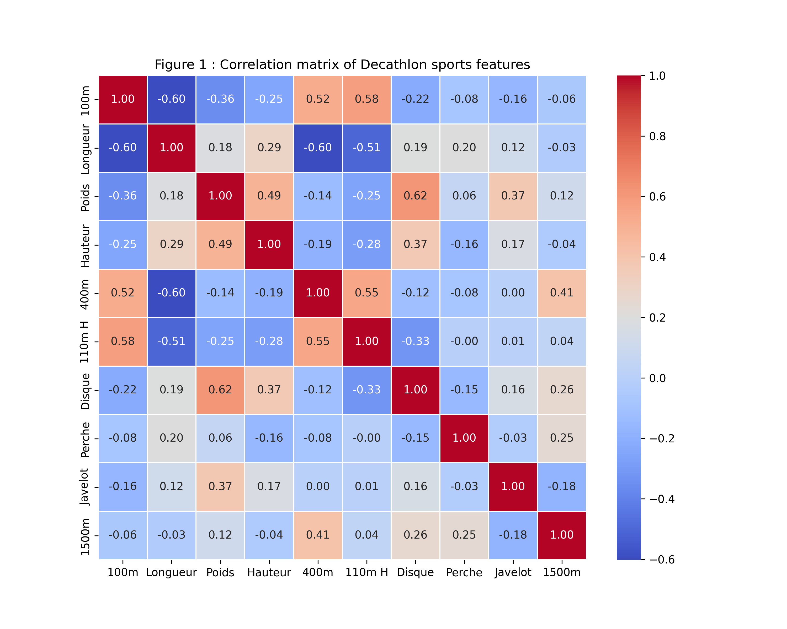
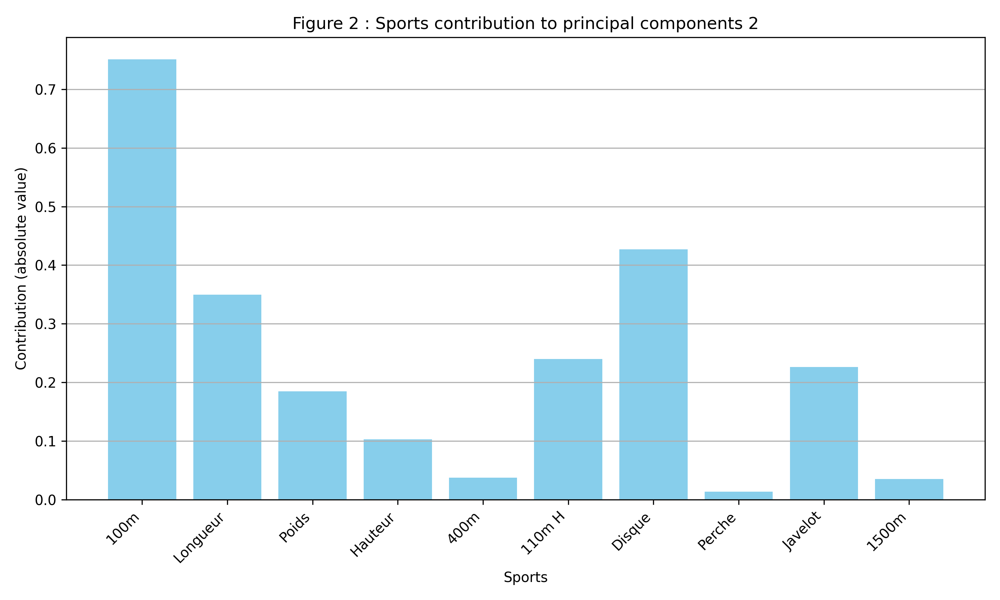
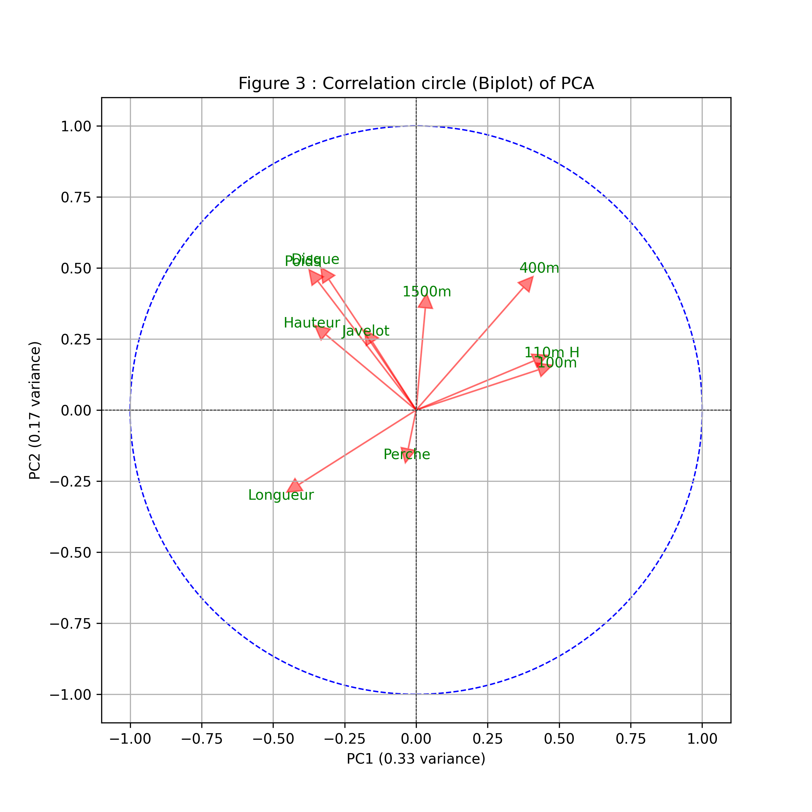
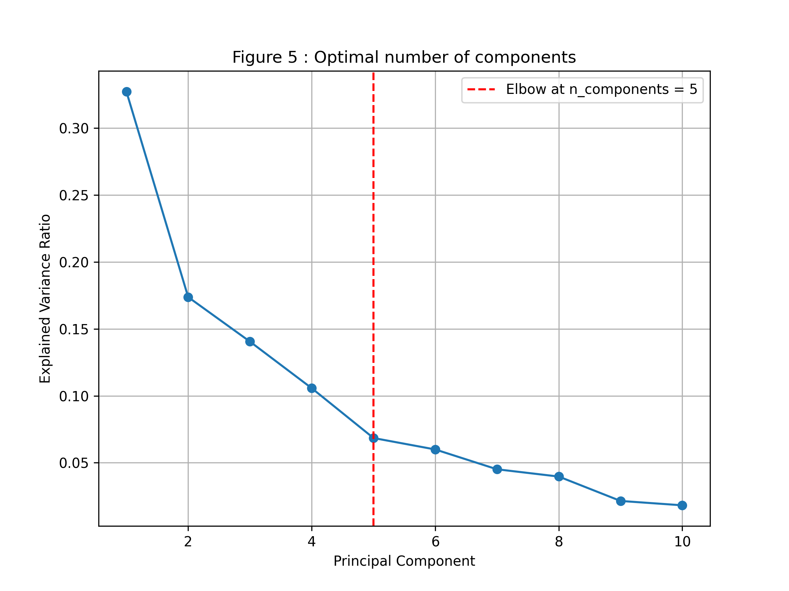
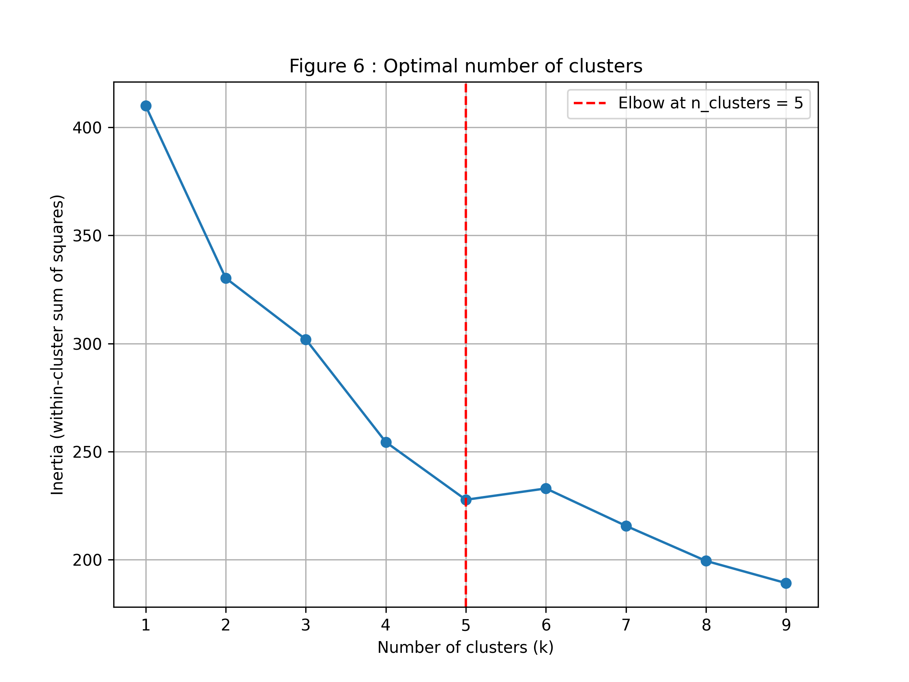
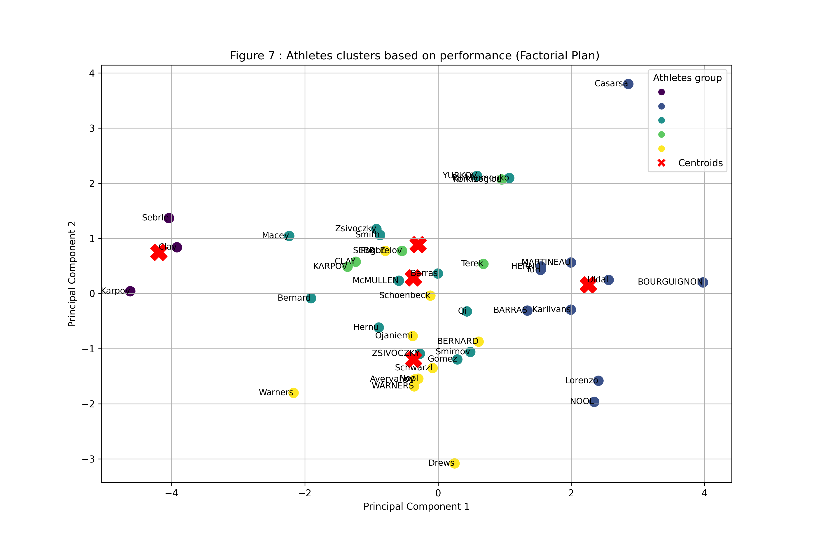
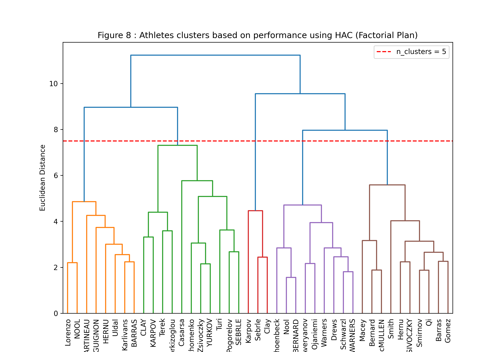

🇫🇷 Visualisations du projet
Cette page regroupe les graphiques générés pour l’analyse du jeu de données Decathlon.
🇬🇧 Project Visualisations
This page displays the plots generated for the Decathlon dataset analysis.

Figure 1 - Correlation matrix of decathlon sports features

Figure 2 - Sports contribution to principal components

Figure 3 - Correlation circle (Biplot) of PCA
_version2.png) Figure 4 - Factorial plane with_bubble sizes proportional to quality of representation (cos²)
Figure 4 - Factorial plane with_bubble sizes proportional to quality of representation (cos²)

Figure 5 - Scree plot - Optimal Number of components

Figure 6 - Scree plot - Optimal number of clusters

Figure 7 - Athletes clusters based on performance

Figure 8 - Dendrogram - Athletes clusters based on performance